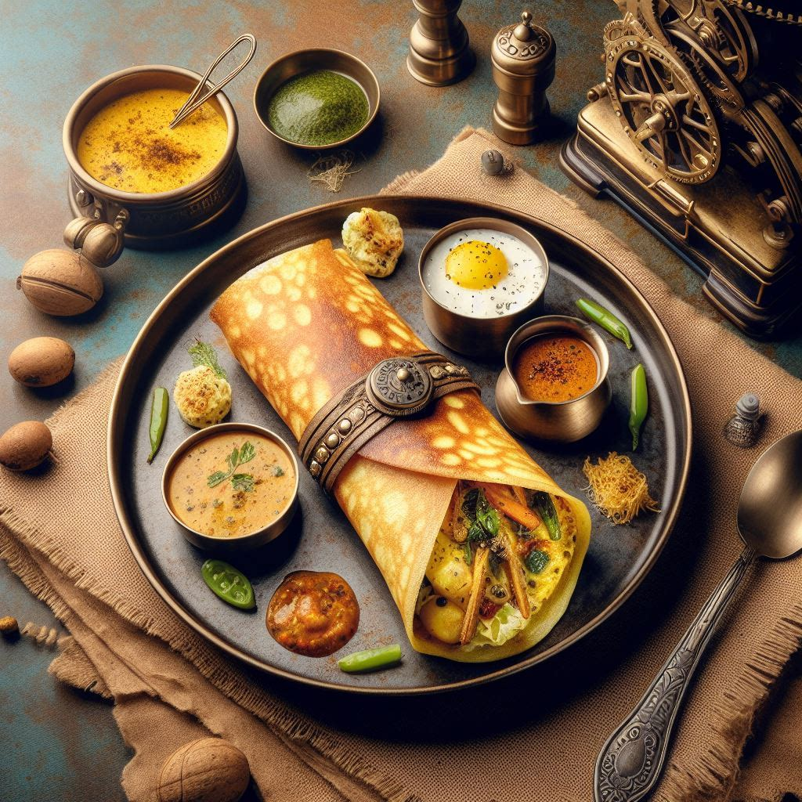

Egg Dosa

Description
Egg dosa is a popular South Indian dish that combines the goodness of
dosa, a fermented rice and lentil crepe, with the richness of eggs.
Ingredients
- Dosa batter
- Eggs
- Salt
- Oil or ghee (clarified butter)
Steps
-
Prepare the dosa batter: If you haven't already, soak
rice and lentils (usually a mix of urad dal and rice) for a few hours,
then grind them into a smooth paste. Ferment this mixture overnight or
until it's slightly sour.
-
Heat a skillet: Place a non-stick skillet or dosa pan
on medium heat and let it heat up.
-
Pour the dosa batter: Once the skillet is hot, pour a
ladleful of dosa batter onto the center of the skillet. Using the back
of the ladle, spread the batter in a circular motion to form a thin,
even layer.
-
Crack an egg: Crack an egg directly onto the center of
the dosa. Be careful not to break the yolk.
-
Spread the egg: Using a spatula, gently spread the egg
over the dosa, being careful not to tear the dosa.
-
Season with salt: Sprinkle a pinch of salt over the egg
to season it.
-
Drizzle oil or ghee: Drizzle a little oil or ghee
around the edges of the dosa and on top of the egg.
-
Cook until done: Let the dosa cook on medium heat until
the edges start to brown and crisp up, and the egg is cooked to your
desired level of doneness.
-
Fold and serve: Once the dosa is cooked, fold it in
half or roll it up and transfer it to a serving plate.